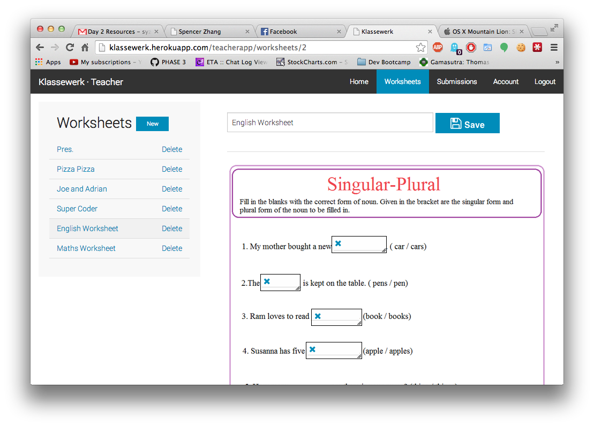
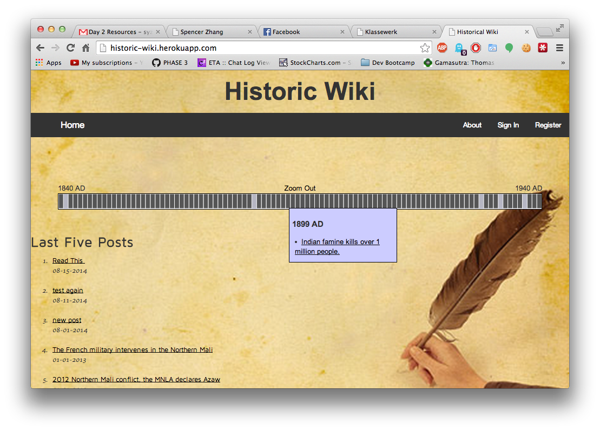

Spencer Zhang
Web Developersyzhang761@gmail.com | 847-778-6178
- About Me
- Experience
- Projects

About Me:
I'm a recent graduate of Dev Bootcamp. I'm currently searching for a position as an apprentice or junior developer.My Skills
Programming Languages
- Ruby, C++, Javascript, HTML, CSS
Technologies
- Sinatra, Rails, Ember js, D3, AJAX, Amazon S3, ImageMagick
Klassewerk
What is it?
- Klassewerk is a platform for teachers to upload and modify traditional paper worksheets and immediately share them with their students via a web interface. Once a student completes a worksheet, teachers are able to view their responses and provide instant feedback.
What I did
- Learned and used Ember JS to add responsiveness to web page.
- Designed and implemented the interface for uploading pictures
- Automated the reprocessing of uploaded images to speed up page load times.
Technologies used:
- Ember JS, Ruby on Rails, ImageMagick, Amazon S3, jQuery, Javascript
Historic Wiki
What is it?
- Historic Wiki is an app where users could create posts about historical events, which would visually represented on a timeline.
What I did
- Created an interactive timeline interface using jQuery and D3.
- Use Ajax calls to synchronize timeline display with the database.
Technologies used:
- Ruby on Rails, D3, jQuery, Javascript
Experience
Student - Dev Bootcamp
June 2014 - August 2014 Chicago, IL
- Completed 9-week intensive web development program.
- Learned and practiced Ruby on Rails, HTML5, CSS, Test Driven Development, Javascript (AJAX, jQuery), Git and Source Control, Heroku, and Agile Development.
QA Technician - Baxter International Inc.
September 2010 - August 2012 Round Lake, IL
- Reviewed and reported customer complaints according to FDA regulations.
- Diagnosed returned products for cause of malfunction.